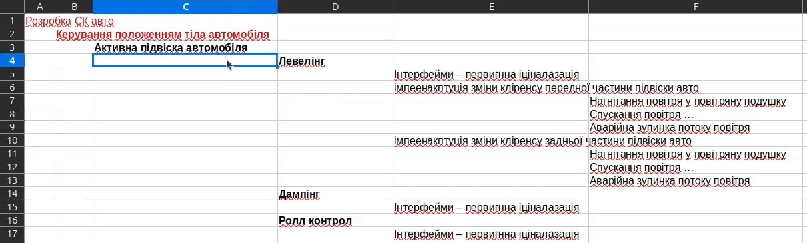
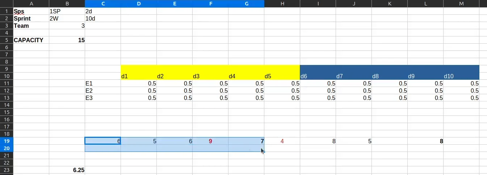

Teaching / Session 16 · 11 Nov 2026
Jira in Practice: Workflow, Story Points and Sprint Capacity
What a ticket must contain, when you can do without iterations, decomposing an active suspension, a workflow without shortcuts, voting on story points and a sprint at 80 % capacity.
11.11.2026Session 16 / 1601:36:23Practical session
Course chronology
Engineering notes
What a ticket must contain, when you can do without iterations, decomposing an active suspension, a workflow without shortcuts, voting on story points and a sprint at 80 % capacity.
From requirements to tasks
Story points and voting
Sprint capacity up to 80 %
Full session notes
Full session notes
Complete English teaching notes derived from the Ukrainian transcript of 11 November. Diagrams are editorial, based on the lecturer’s explanations; student names are not published.
Session 16. Jira in practice: work hierarchy, workflow, story points and sprint capacity
11 November 2026 · practical session · 1 h 36 min. Prepared from the automatic transcript and the video recording
IgorSikorskyKPI_L11_111126.mp4: the tables, Jira settings and calculations the lecturer showed on screen have been added from the video. During the air-raid shelter break (about 00:47–00:57) the recording has no speech. These are edited teaching notes, not a verbatim record: obvious recognition errors are corrected and terms are aligned with earlier sessions. The names of students and third parties are not published. The conversation about internships and interviews reflects the lecturer’s opinion and experience. Editorial clarifications and editorial diagrams are marked separately.
0. Organisational
- There were two alerts during the session; during a missile threat the lecturer called a 10-minute break and asked everyone in Kyiv to go to a shelter: “It is not worth it.”
- The session continues session 15: yesterday a Trello board was created, today Jira is configured.
- At the start the lecturer opened yesterday’s demoBoard: the card “Collecting information about the object and its environment” was already in Review, and its log held every move between lists.
1. Recap: what a ticket must contain
A reminder using Trello (the same vendor as Jira and Confluence — Atlassian, “practically a monopolist in the traceability of processes and tasks”):
| Field | Rule |
|---|---|
| Stage | To Do, In Progress, Hold, Review, Done — or others, depending on your workflow |
| Title | Short, but enough to understand the task |
| Description | What to do, which results are expected and the completion criterion (definition of done); important notes from the author — “data on the website”, “the Excel sheet” |
| Comments | Stay in the history with date and time; editing comments can be disabled |
| Assignment | Who the task is assigned to |
| Labels | A category (testing, documentation…) — like labels in GitHub, to find a group of tickets quickly |
| Dates | A start date is required, an end date is desirable — until when the task is relevant |
| Subtasks / checklist | The assignee closes items one by one — progress is visible |
If a task is not described in detail, the assignee will either do “something else”, spend your time asking for explanations, or say: “You did not explain the task well enough, so I did it this way.”
The lecturer’s rule: after every state change (In Progress → Hold, In Progress → Review, Review → Done) leave a comment — what was checked, whether there are remarks. It is a safeguard: the person really worked with the task rather than dragging it mechanically.
Why Trello is dangerous: a card can be dragged from In Progress straight to Done, bypassing Review. If moving to Done automatically triggers a GitHub Action that merges into main, unreviewed code ends up in the main branch — a serious source of errors.
2. Kanban and Scrum: what you need to know before starting
Scrum is not the pinnacle but one of the models of team work. Its drawback is redundancy: development is run through several times iteratively and improved each time. The lecturer put it this way: first make it work, then make it work well, then make it look good. Four iterations take more time: you get the product later, but with fewer risks.
Editorial clarification. This sequence is usually quoted as “Make it work, make it right, make it fast” and attributed to Kent Beck; Brian Kernighan expressed a similar idea earlier.
Why not always use Kanban, which, in the lecturer’s words, “delivers something good, high-quality and working from the first iteration”? Because Kanban, as he understands it, has one precondition: before the project starts you must understand very clearly what you are building. There is no room for research, attempts or mistakes. You need:
- Requirements engineering — a huge field: standards, guidelines, frameworks, very clear communication with stakeholders and the customer. People who know processes and standards join the project: architects, technical writers, leads.
- Architecture description — a large, strictly controlled document that describes the whole system “on paper, in A4 format”. It is agreed with the customer, who confirms by e-mail or signature that it fully matches what they want to receive.
- Design descriptions — the decomposition of the architecture: each part of the system with its algorithm, interfaces, technologies and test approach.
- Distribution between architects. The system architect hands large pieces of work to domain architects (software, hardware, mechanics) together with the system requirements. The hardware architect “runs them through himself” and produces hardware requirements, then cuts them into tasks in Jira. The tasks cover his requirements, and his requirements cover the system requirements.

Then everything is written down before work begins, and the system will be best aligned. An example from the lecturer’s practice: he was the architect of a hardware module with its own interfaces, while another architect on the customer’s side described the wire harnesses. Because of poor communication, the harness and the interface did not match — a difference of a few millimetres. An adapter had to be made in a hurry, and the issue could only be fixed in the next development iteration half a year later. “We did not follow Kanban: we worked Scrum-style, he and I separately, in parallel — and got two mismatched pieces of one system.”
Scrum is for work where “who knows how to do it”: there is a general understanding, but it is unclear what is inside, which methods and libraries to use. You start with interfaces, then find the main library, connect it to the interfaces, then build the UI. “There is a vast field to plough: you take one square, plough it, things become clearer — and move on.”
If everything can be described up front, Kanban gives you an excellent system “in one go”. But if you fail at the systems-engineering level, there is no chance to fix it: “huge investments thrown under a train”.
Editorial clarification. What the lecturer calls Kanban here is a plan-driven approach (waterfall, V-model): a full specification and architecture before the start and formal agreement with the customer — the approach typical of projects under ISO 26262 or Automotive SPICE. A kanban board is often used to execute such a plan. In the canonical definition (Kanban Guide), Kanban is a strategy for optimising flow with controlled work in progress; it does not require a full specification up front. The main point of the session stands: the better the system is described before the start, the fewer iterations are needed; the more uncertainty, the more iterations.
3. Example: active vehicle suspension — from composition to tasks
The running example is an active vehicle suspension, software part only (hardware and mechanics are out of scope).
| Level | In the example |
|---|---|
| Composition | Active suspension |
| Epics (components) | Levelling — ride height; Damping — stiffness; Roll control — controlling body roll so the car does not slide |
| Stories | Interfaces; initial initialisation; implementing front and rear ride-height change |
| Tasks | Inflating the air spring; deflating it; emergency stop of the air flow |
The lecturer first wrote the decomposition in LibreOffice Calc as a “ladder”: each lower level one column to the right. Above the active suspension he added two more levels — “Vehicle control systems development” and “Vehicle body position control” — to show where the team’s responsibility ends.


Above the composition there is a higher level — vehicle body control — and above that the vehicle control system. But they are out of scope for the team: you join calls with those teams and agree the interfaces, but implement nothing for them. That is why interfaces down (to the actuators) and interfaces up (to the higher-level vehicle control software) are written as separate work.

4. Configuring the Jira space
The lecturer created a Scrum space — “an iterative approach for software engineering is a really neat thing” — named Vehicle body control active suspension. The board shows a sprint (a time interval for solving tasks) and a backlog (the “basket” where tasks wait to be taken into a sprint). On screen the space was called My Scrum Space with the key SCRUM — the key that forms work-item numbers (SCRUM-1, SCRUM-2…); right after creation it held an empty SCRUM Sprint 1 and Backlog.
By default only stories, features and bugs could be created, so Epic was added in the space settings and the fields of each work type were configured: By default an epic had Summary (required) and Description, plus Status, Assignee, Labels, Parent, Team, Due date, Start date, Sprint and Story point estimate; the system fields Environment, Original estimate, Priority and Time tracking are added from the side panel. Later the lecturer also added Priority to the Story type.
| Type | Fields kept | Removed, and why |
|---|---|---|
| Epic | Summary, Description (required), Assignee (optional — an epic may belong to the team as a whole), Start/Due date, Reporter — who created it and is responsible | Sprint — an epic is more abstract than a sprint; Story points — they belong to features, tasks and subtasks; Parent — an epic above an epic breaks the canonical hierarchy |
| Bug | Original estimate (how long the fix will take), Assignee, Parent (the task in which the bug was found), Due date, Labels, Team, Start date, Sprint (which sprint fixes it), Priority | — |
| Feature / Task | Summary, Description with a completion criterion, Original estimate, Priority, Assignee, Parent (epic), Due date, Labels, Team, Start date, Story points, Time tracking | — |
Team is needed because there may be several teams: one for levelling, one for damping, one for roll control, plus testers, DevOps and others. A task can be assigned to a whole team, and the team decides who does it.
Time tracking matters under Time & Material: the customer wants to know what exactly the time went into (“20 hours on this feature”), not just to receive a big invoice once a month. In Jira you can start and stop a timer or enter time manually.
Workflow
The key setting is the workflow, i.e. which paths a task may take between states: The template’s default workflow had “Any” transitions — every status could be reached from any other. The lecturer removed them, drew explicit transitions (including “Take” from To Do to In Progress), created a new HOLD status and saved the workflow for all six work types: Epic, Subtask, Task, Story, Feature, Bug. In Jira the Review status is called In Review.
| Transition | Rule |
|---|---|
| Created → To Do | Automatically, no conditions |
| To Do → In Progress | Only through the “Take” action |
| In Progress ↔ Hold | You can pause when blocked; from Hold only back to In Progress |
| In Progress → Review | The work is ready for checking |
| Review → Done | Only after review |
| Review → In Progress | The reviewer found a problem — back for rework |
| Anything → To Do | Forbidden: a task never returns to To Do |
| Anything → Done | Forbidden except from Review |


Such a workflow “is safe: nobody can bypass the system”. It was applied to all work types. For bugs it was tempting to remove Hold, but the lecturer kept it: without Hold an endless loop In Progress → Review → In Progress is possible. If ideas for fixing a bug have run out, the bug needs somewhere to “rest” rather than consume time “banging your head against the wall”.
5. Story points
Can you say right away how much the levelling feature will cost and take — a car that rises on the move before turning onto a forest track and lowers itself on the motorway? “A year, maybe two, with ten engineers, or maybe twenty” is guesswork. Nobody in their right mind estimates a whole feature; it is broken into small pieces.
- The interface between the control system and the compressor: a request for a new pressure — effectively one parameter. The compressor knows its current pressure and decides whether to inflate or deflate. This can be estimated: one engineer of a given level, about two days.
- Measuring the current pressure — “this is harder”. The key word is harder: we are talking about relative values.
The simplest task that could be tied to time and a specific person is 1 story point. There will probably be no smaller tasks. Everything else is estimated relative to it:
| Task in the levelling feature | Estimate |
|---|---|
| Interface to the compressor | 1 SP |
| Measure the current pressure | 3 SP (≈ three times harder) |
| Control the pressure — a controller (P, PI, PID, LQR…) | 6 SP |
| Levelling feature as a whole (simplified) | ≈ 10 SP |
There is no mathematical formula such as “a story point is 10 person-hours of an engineer of class X”: people differ, and there are no “classes”.
How the team votes
The whole team estimates, and all votes are equal — the lecturer’s, a team lead’s or a junior’s. In the session everyone gave an estimate for the “level measurement” task: from 4 to 9 SP. The lecturer entered the votes in a sheet: 6, 5, 6, 9, 7, 4, 8, 5, highlighting the extremes 9 and 4 in red. The average was 6.25, which is always rounded up, to 7, because of risks.
The extreme values are the most valuable:
| Extreme | Possible reasons |
|---|---|
| Maximum (9) | The engineer wants more time “to take it easy” (according to the lecturer, the most common reason); an experienced engineer has done something similar and knows where problems appear; simply not paying attention |
| Minimum (4) | The engineer has done something similar and knows a faster way |
Both extremes are “a gift from the gods”: either you detect a problem early or you find someone with experience and a faster solution. “In a sane business there is no place for attacking your team.”
Editorial clarification. The exercise is close to Planning Poker (James Grenning, 2002; popularised by Mike Cohn in 2005). Canonically, everyone reveals their estimate at the same time to avoid anchoring, then the authors of the highest and lowest estimates explain their reasoning, and the team votes again until the estimates converge. A Fibonacci-like scale (1, 2, 3, 5, 8, 13…) is common. Averaging and rounding up is a widespread variant. Tying “1 SP = 2 days” is a local team agreement for the first sprint; after that, capacity is usually forecast from the actual velocity of previous sprints.
6. Priorities and sprint capacity
Priorities follow dependencies. In the backlog the lecturer created five stories of the levelling feature: Leveling : Interfaces, Level Measurement, Level request, Level Control, Level Change (keys SCRUM-1…SCRUM-5), and gave them estimates and priorities. Everything depends on the interfaces, so they get the highest priority. Without measuring the current level you cannot control it — high. The level request — high. Level control and level change become possible only after that.
Capacity calculation:
| Parameter | Value |
|---|---|
| 1 story point | 2 working days of one engineer (team estimate) |
| Sprint | 2 weeks = 10 working days (always start with two weeks; you can change it later) |
| Engineers in the team | 3 |
| One engineer’s contribution | 0.5 SP per day × 10 days = 5 SP |
| Sprint capacity | 3 × 5 = 15 SP |


Tasks are dragged into the sprint by priority: Interfaces (1 SP) + Level Measurement (7 SP) + Level request (4 SP) = 12 SP. The next task would bring it to 16 SP — over capacity — so sprint 2 is created and filled in turn.
First the lecturer demonstrated a “clever” trick: he split Level Control into two 2 SP tasks (Level Control and Level Control _2), and sprint 1 reached 14 SP of 15.

The lecturer rejected the “clever” option of cutting a task in two to bring the first sprint up to 15: a task may not be splittable in engineering terms at all; besides, new tasks will appear during the sprint, and changing a sprint is “a mortal sin”.
Why you must not overload a sprint, especially the first one:
- the first sprint never goes smoothly: someone’s tools are not installed, someone’s computer has not arrived, two engineers argue about the seat by the window, someone is in the draught from the air conditioner;
- the team is layered on top of the “sprint maths”: someone dislikes someone, someone drinks tea rather than coffee — and work slows down;
- the bus factor: anyone may fall ill or drop out, and their tasks fall on fewer people.
So a 15 SP plan is idealistic. The lecturer referred to SAFe and PMI: load a sprint to 80 % of capacity. He left the first sprint at 12 SP.
Editorial clarification. The Scrum Guide (2020) says that during the Sprint no changes are made that would endanger the Sprint Goal; at the same time scope may be clarified and renegotiated with the Product Owner. So the “mortal sin” is changes that undermine the Sprint Goal, not any clarification. On the 80 %: SAFe explicitly advises against planning to 100 % of capacity, and its normalised estimate (8 SP per full-time person per two-week iteration) corresponds to about 80 % of working time. We did not find a separate “80 %” rule in PMI publications; it is a widespread rule of thumb.
After each sprint there is a retrospective and planning of the next one: the manager looks at how the sprint went, assigns tasks to the new one and gradually tunes the process. The goal is for the team to be comfortable working for as long as needed, for the customer to be able to pay for as long as needed and for the product to keep developing for as long as possible. “If I achieve that, I am a good manager.” The strongest instrument here is team feedback at the end of the sprint.
7. Off topic: internships and juniors (the lecturer’s opinion)
During the shelter break the conversation turned to the pre-diploma internship, which, according to the students, their group does not have. The lecturer considers an internship at a company very valuable:
- a diploma based on real equipment, tasks and corporate processes is quite different from an abstract topic;
- students bring modern approaches back to the department — a “useful stress” for a department that otherwise “stews in its own juice”;
- a year ago the lecturer took student interns into his project, and they did so well that the company hired them.
A student said that getting an interview for a junior position is much harder than for a mid-level one. The lecturer’s explanation: it is a management problem. A non-technical manager is afraid of juniors — “you have to explain everything to them”. A technically competent one sees the benefits: creativity without “walls” and the chance to do a project more cheaply with a higher margin. In the lecturer’s estimate, the salary gap is so large that a month of a senior’s work is almost a year of a trainee’s. His advice: at an interview, find the words to get this argument across to management.
Practical takeaways
- A good ticket: a short title, a description with a completion criterion, an assignee, labels, dates, subtasks.
- A comment after every state change guards against mechanical dragging.
- Moving to Done without Review is dangerous, especially with an automatic merge.
- The more completely the system is described before the start, the fewer iterations are needed; under high uncertainty, use Scrum.
- Work hierarchy: composition → epics → stories → tasks; interfaces up and down are separate work.
- Workflow: Done only through Review, never back to To Do, Hold protects against endless loops.
- Story points are relative to the simplest task; the whole team votes and the extremes are discussed.
- Sprint capacity is calculated from the team and the sprint length; the first sprint is not fully loaded.
Self-check questions
- What should a ticket description contain, and what is a definition of done?
- Why leave a comment after every state change?
- Why is In Progress → Done combined with an automatic merge dangerous?
- What must you have before the start to work without iterations, and what is the risk of that approach?
- How do system requirements relate to hardware requirements?
- How do you decompose an active suspension into epics, stories and tasks?
- Which fields does an epic need, and which a bug, and why?
- Why was Hold kept in the bug workflow?
- What is 1 story point, and how are other tasks estimated?
- Why is the average estimate rounded up, and why discuss the extreme values?
- How do you calculate sprint capacity for 3 engineers, a 2-week sprint and 1 SP = 2 days?
- Why should the first sprint not be loaded to 100 %?
What comes next (forecast)
The lecturer did not announce a specific topic for the next session. This is an editorial forecast, not an announcement: given the second-assessment requirements, likely topics are the Gantt chart and the engineer involvement chart, costing, filling the backlog with at least four two-week sprints, assigning and estimating tasks, and GitHub Projects — the third tool mentioned in session 15.
Verified links
- The Scrum Guide (2020): https://scrumguides.org/scrum-guide.html
- The Kanban Guide: https://kanbanguides.org/english/
- SAFe — “Planning to 100% capacity? Don’t do it!”: https://scaledagile.com/planning-to-100-capacity-dont-do-it/
- SAFe, Iteration Planning: https://framework.scaledagile.com/iteration-planning/
- Make it work, make it right, make it fast (Kent Beck): https://dev.to/weeklydevtips/make-it-work-make-it-right-make-it-fast